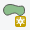
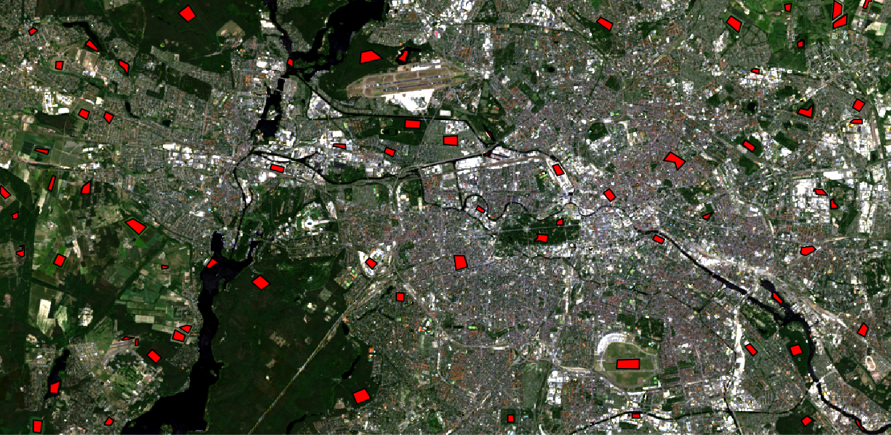

Classification in R
vorab zuschneiden und dann aus dem code später herausnehmen
We want to utilize a Random Forest (RF) and a Support Vector Classifier (SVM) algorithm in order to classify the Berlin land cover in six elementary categories: bare soil, water, grassland, forest, urban low density, and urban high density. Therefore, we need an image dataset and a shapefile containing points or polygons to which the respective class is attributed.
The workflow will be exemplified by a L9 scene (ID: LC09_L2SP_193023_20240512_20240513_02_T1), which you may already have acquired during the L8/L9 Download Exercise. You need to preprocess the scene as shown in chapter Preprocess. In addition, we narrowed our research area to Berlin to keep the data small (as shown in chapter Visualize in R).
You can download both the preprocessed image and the shapefile for testing purposes here.
This section guides you through a complete classification process for satellite imagery. The resulting classification maps will be validated in the next chapter.
Sample in QGIS – some basic considerations and tips for sampling
– collect training polygons in QGIS for supervised classification
Prepare Samples in R – import training polygons into R
– use training polygons to extract raster information
– put everything together in a data frame
RF Classification – train a RF model with “randomForest” package
– classify image data and export a classification image
SVM Classification – train a SVM (C-Classification method) with “e1071” package
– classify image data and export a classification image
Sample in QGIS
This section provides a guide on how to create training areas in the form of polygons, which we save in a shapefile in QGIS. If you prefer you can likewise create a geopackage- file. The process is very similar to collecting samples in ArcGIS/SNAP, which you already know from our GIS seminars.
Collecting training areas is essential when working with supervised classifiers and significantly influences the classification outputs. You should make some preliminary considerations and approach the sampling very carefully! In the following, we will focus on the most important basics to consider.
Preliminary thoughts about sampling
Probably the most frequently asked questions are how many polygons should be created by class and and how big should they be?
– Good questions!
Unfortunately, those just can not be answered directly. The amount of training data you need, i.e., polygon count and size, depends both on the
- complexity of your classification problem (number and similarity of target classes, …) &
- complexity of your classification algorithm (number of parameters or weights, RF, SVM, ANN, ML, …).
####Examine links! Sampling data in machine learning is a science in itself, which is why there is a wealth of scientific publications about it (Curran & Williamson 1986, Figueroa et al. 2012) and even entire books (Marchetti et al. 2006, Hastie et al. 2017).
Fine, so far that is not much of a help…
To keep it very simple: You need a sample of your data that represents the problem you want to solve. Keep in mind, a classifier learns a mathematical function, which maps input data (e.g., spectral bands) to output data (e.g., class labels). In order to achieve this, you should provide enough training data to capture the relationships between input and output. Training data will optimally meet the following requirements:
- independence of test data:
A training dataset must be independent of the test dataset used for a validation, but can follow the same probability distribution. No training sample may be used to test (validate) the performance of the classifier! In the context of remote sensing data, it is also important that train and test data are spatially maximally distant avoid spatial autocorrelation (Morans I). - mostly identical distributed:
Each target class should be equally represented in the training data set. Most datasets do not have an exactly equal number of instances in each class. Small differences often do not matter. However, if there is a strong imbalance, e.g., 90% of all training data represent class 1 and only 10% class 2, most algorithms very quickly “overclassify” the more-prevalent classes. Some simple options to avoid this effect: Collect more samples of the low-represented classes, use data augmentation to synthetically create new samples for under-represented classes, or use a under sampling method. The simplest under sampling method is to delete samples from the over-represented classes during classifier training. We will use this latter method for the RF and SVM implementations later on. - representative for target classes:
Training data should cover as many intra-class variations as possible, e.g., all spectral classes of a thematic target class, such as deciduous trees and conifers for the target class “forest”. Especially with more complex, non-linear classifiers, such as RF and SVM, it is important to include near-border training samples to map the class transitions more accurately. For example, water bodies should also be sampled in the shore area rather than just creating polygons in deep water areas. - available in sufficient quantity:
There are statistical heuristic methods available to calculate a suitable sample size. Often a factor of the number of classes, the number of input features or the model parameters are used (e.g., 5 features – 25 training samples per class, Theodoridis et al. 2008) or the minimum number of samples necessary to perform the power calculation is searched (Dell et al. 2002). However, these rules are not universally applicable! Anyway, if you have many features, e.g., hundreds of spectral channels in hyperspectral images, it is important to collect even more samples to avoid the curse of dimensionality, i.e., Hughes phenomenon (Hughes 1968). This curse occurs when the samples can not reflect the possible parameter combinations in such a high dimensional feature space. As a result, the classification accuracy decreases as more features are included in the algorithm. The best way to find out if the training samples are sufficiently set is to plot a learning curve. A learning curve plots the model performance on the y-axis versus the size of the training dataset on the x-axis as a line. On this way, you may be able to evaluate the amount of data that is required for a solid model performance, or perhaps how little data you actually need before before the learning curve stagnates or even drops again. This plot can be generated during training, as shown in the next sections.
Before you start sampling the training data in QGIS, here are some general tips for digitizing your polygons, if you want to perform a monotemporal classification based on spectral features:
- evenly distribute the polygons for each class over the entire scene to best cover any atmospheric variations that may exist within the image
- for each class, try to digitize an area of approximately the same size (sum of all polygons)
- keep in mind: each raster pixel under your polygons is a training sample!
- avoid huge polygons(!), e.g., creating a huge polygon over a homogeneous lake does not add much value in terms of characterization of the spectral properties of a lake. – create several small polygons covering different lakes instead
- take your time! Sampling is an essential processing step and will largely determine your further analysis
Enough theory, time to collect training data.
Import a Raster Dataset
The training polygons should define relevant areas for the differentiation of the desired target classes (bare soil, water, grassland, forest, urban low density, and urban high density in our example). To know where these surfaces are located, we need corresponding image data as a basis. So let us import an image dataset!
First of all, open QGIS.
There are several ways to open a raster dataset here: Either navigate via the main menu to Layer > Add Layer > Add Raster Layer…, or press the corresponding icon in the toolbar or press the shortcut Ctrl + Shift + R to open a file explorer window.
{kind=link}
In the file explorer window, navigate to the data folder which holds your L9 data and import a raster dataset. We will use a L9 scene showing Berlin (ID: LC09_L2SP_193023_20240512_20240513_02_T1) from the L9 Download Exercise. The spatial subset can be downloaded here directly:
{kind=link}
Landsat 9 spatial subset imported into QGIS
If you have started a new QGIS project (or just opened QGIS), the projection of the entire project will be based on the first dataset you load – in this case the raster file. You can see the current projection of the project in the lower right corner of QGIS. If you use our example data set, you should now see there. Click on this entry to get more detailed information about coordinate system of our raster dataset (“WGS84 / UTM ZONE 33 N”). Alternatively, you can double-click the dataset in the Layer Panel and view the Coordinate Reference System (CRS) in the General-tab. We want to generate a new shapefile, which shares exactly this georeference system. This is the best way to ensure that the polygons are geographically correctly located in the end.
Create a New Polygon Shapefile
First, navigate to the area of interest (AOI) in your image data. Then click on the New Shapfile Layer icon in the toolbar. If you can not find this icon, right-click in the toolbar area and make sure there is a check mark next to “Manage Layer Toolbar”, which should reveal this icon among others. Once clicked, the “New Shapefile Layer” dialog will be displayed. Choose “polygon” as the Type in the top row of the window. Click on the Coordinate System icon. A new window will pup up, allowing you the choose the CRS of your new shapefile. Choose the same CRS as your raster data (you can use the filter function at the top). On the Fields list, select “id”, and click the button at the bottom of the list. Under “New field”, type “classes” in the Name box, click on . Finally, this should look like this:
{kind=link}
If everything is set up, click OK. You will be prompted to the “Save layer as…” dialog. Type the file name (“training_data.shp”), choose a file path and click Save. You will be able to see the new shapefile in the Layers Panel of QGIS. Select it and press the Toggle Editing icon in order to activate editing functionalities. Note that a little pencil symbol will show up on top of the layer, indicating that the layer is now editable. Now click on the Add Feature  icon. The mouse cursor will now look like a crosshair. Left-click on the map in the Map View to create the first point of your new feature. Keep on left-clicking for each additional point you wish to include in your polygon. When you have finished adding your points, right-click anywhere on the map area to confirm your polygon geometry. An attribute window will appear immediately, asking for your class label. Input the appropriate class label for your polygon and click OK. Click on the Toggle Editing icon again in order to end editing and to save your changes by choosing Save.
You can edit the shape of a polygon with the Node tool . Delete any unwanted polygons by clicking on the tool called “Select Features by Area or Single Click” . Once activated you can left-click on polygons you want to delete, causing them to turn yellow. Then, press the delete key on your keyboard to remove the polygons (only in editing mode). Choose “Categorized” in the uppermost drop-down menu.
After some time you should have collected some training areas:
{kind=link}
You can also color the polygons during editing based on the “classes” attribute, which makes it easier for you to estimate the class distribution. Double-click the shapefile in the Layers Panel and navigate to the Style tab. Ensure that your attribute “classes” is selected in the drop-down menu below. Click Classify once to apply an individual color to each class (click on the colored boxes in order to change the colors) and confirm everything by pressing OK:
{kind=link}
If you think you have collected enough samples, save everything by clicking on the Toggle Editing icon again and choose to Save.
We do not need QGIS anymore, so close it.
Prepare Samples in R
We want to put the training samples created in the previous section in the form of a data frame – which most classifiers in R can handle easily (especially our RF and SVM algorithms). You can [download the training_data shapefile here]####{target=“_blank” rel=“noopener”}. For this task, we again take advantage of the powerful terra package. The complete code is shown below and a more detailed description is given afterwards.
# Load the terra package
library(terra)
# Set the working directory
setwd("./data")
# Import the raster image and shapefile
img <- rast("./landsatdata/LC09_L2SP_193023_20240512_20240513_02_T1.tif")
shp <- vect("./vector/training_data.shp")
#### Shapefile Berlin
# Let's subset the data according to our shapefile and save it.
img <- crop(img, shp, filename=paste0(substr(product, 1, nchar(product) - 4), "_subset.tif"))
# Rename the raster bands
names(img) <- c("b1", "b2", "b3", "b4", "b5", "b6", "b7")
# Extract samples with class labels and put them all together in a dataframe
smp <- extract(img, shp)
# Match the extracted samples with class labels
smp$cl <- as.factor(shp$classes[smp$ID])
# Remove the ID column (the first column) if not needed
smp <- smp[-1]
# Display the resulting dataframe
print(smp)
In-depth Guide
In order to use functionalities of the terra package, load it into your current session via library(). If you did not yet install terra, please do so using install.packages():
#install.packages("terra")
library(terra)Next: set your working directory, in which all your image and shapefile data is stored by giving a character (do not forget the quotation marks " ") variable to setwd(). Check your path with getwd() and the stored files in it via dir():
data folders
setwd("./data")
getwd()
## [1] "/reseda/data/landsatdata"
dir()
## [1] "LC081930232017060201T1-SC20180613160412_subset.tif"
## [2] "polygons_training.dbf"
## [3] "polygons_training.prj"
## [4] "polygons_training.qpj"
## [5] "polygons_training.shp"
## [6] "polygons_training.shx" If you do not get your files listed, you have made a mistake in your work path – check again! Everything ready to go? Fine, then import your raster file as img and your shapefile as shp and have a look at them:
img <- rast("LC081930232017060201T1-SC20180613160412_subset.tif")
img
####
shp <- shapefile("training_data.shp")
shp
## class : SpatVector
## geometry : polygons
## dimensions : 72, 1 (geometries, attributes)
## extent : 369802.9, 400028.9, 5812457, 5827504 (xmin, xmax, ymin, ymax)
## source : training_data.shp
## coord. ref. : WGS 84 / UTM zone 33N (EPSG:32633)
## names : classes
## type : <chr>
## values : water
## water
## water
####
same.crs(shp, img)
## [1] TRUEBoth the rast()andvect()functions are provided by the terra package. As shown above, they create objects of the class SpatRaster and SpatVector respectively. The L9 raster provides 7 bands, and our example shapefile 72 features, i.e., polygons. You can check whether the projections of the two datasets are identical or not by executingsame.crs(shp, img). If this is not the case (output equals *FALSE*), the terra package will automatically re-project your data on the fly later on. However, we recommend to adjust the projections manually in advance to prevent any future inaccuracies usingproject().\ Plot your data to make sure everything is imported properly (check [Visualize in R](./Visualization.qmd) for an intro to plotting). With the argumentadd = TRUE` in line 2 several data layers can be displayed one above the other:
plotRGB(img, r = 4, g = 3, b = 2, stretch = "lin")
plot(shp, col="red", add=TRUE)[(./img/cla_001.png){.fancybox .image}
If you followed this course in the previous section, your shapefile should provide an attribute called “classes”, which includes your target classes as strings, e.g., “water” or “urban”. We will later turn this column into the factor data type because classifiers can only work with integer values instead of words like “water” or “urban”. When converting to factors, strings are sorted alphabetically and numbered consecutively. In order to be able to read the classification image at the end, you should make a note of your classification key:
levels(as.factor(shp$classes))
## [1] "baresoil" "forest" "grassland" "urban_hd" "urban_ld" "water"
for (i in 1:length(unique(shp$classes))) {cat(paste0(i, " ", levels(as.factor(shp$classes))[i]), sep="\n")}
## 1 baresoil
## 2 forest
## 3 grassland
## 4 urban_hd
## 5 urban_ld
## 6 waterThe levels() function combines all occurrences in a factor-formatted vector. In the example shown above, value 1 in our classification image will correspond to the baresoil class, value 2 to forest, value 3 to grassland, etc.
Optional: Let us take a look at the naming of the raster bands via the names() function. Those names can be quite bulky and cause problems in some illustrations when used as axis labels. You can easily rename it to something more concise by overriding the names with any string vector of the same length:
names(img)
## [1] "LC081930232017060201T1.SC20180613160412_subset.1"
## [2] "LC081930232017060201T1.SC20180613160412_subset.2"
## [3] "LC081930232017060201T1.SC20180613160412_subset.3"
## [4] "LC081930232017060201T1.SC20180613160412_subset.4"
## [5] "LC081930232017060201T1.SC20180613160412_subset.5"
## [6] "LC081930232017060201T1.SC20180613160412_subset.6"
## [7] "LC081930232017060201T1.SC20180613160412_subset.7"
names(img) <- c("b1", "b2", "b3", "b4", "b5", "b6", "b7")
names(img)
## [1] "b1" "b2" "b3" "b4" "b5" "b6" "b7"Appropriate names for the input features are very helpful for orientation and readability. Of course you need to change the vector in line 10 according to your own input features.
Our goal is to extract the raster values (x), i.e., all input feature values, and the class values (y) of every single pixel within our training polygons and put all together in a data frame. This data frame can then be read by our classifier. We extract the raster values using the command extract() from the raster package. The argument df = TRUE guarantees that the output is a data frame:
smp <- extract(img, shp, df = TRUE)It may take some time for this function to complete depending on the spatial resolution of your raster data and the spatial area covered by your polygons. If you have your data stored on an SSD, the process is completed much faster. It may be advisable to save the resulting object to the hard drive save(smp , file = "smp .rda") and load it from the hard disk if necessary load(file = "smp.rda"). On this way, the extract function does not have to be repeated again and again…
The data frame has as many rows as pixels are to be extracted and as many columns as input features are given (in this example the spectral channels). In addition, smp also provides a column named “ID”, which holds the IDs of the former polygon for each pixel (each polygon is automatically assigned an ID). Furthermore, we also know which polygon, i.e., each ID, belongs to which class. Because of this, we can establish a relationship between the deposited ID of each pixel and the class given in the shapefile. We use this to add another column to our data query describing each class. Then we delete the ID column because we do not need it anymore:
smp$cl <- as.factor(shp$classes[smp$ID])
smp <- smp[-1]
summary(smp$cl)
## baresoil forest grassland urban_hd urban_ld water
## 719 2074 1226 1284 969 763
str(smp)
## 'data.frame': 7035 obs. of 8 variables:
## $ b1: num 192 179 189 159 171 164 173 184 144 150 ...
## $ b2: num 229 203 221 179 194 188 192 208 166 165 ...
## $ b3: num 321 233 272 188 203 196 208 254 178 177 ...
## $ b4: num 204 130 164 97 116 108 119 150 83 80 ...
## $ b5: num 161 156 173 125 146 138 146 166 107 104 ...
## $ b6: num 100 93 109 63 82 71 82 104 51 46 ...
## $ b7: num 72 68 81 40 56 51 59 74 32 30 ...
## $ cl: Factor w/ 6 levels "baresoil","forest",..: 6 6 6 6 6 6 6 6 6 6 ...Now you are ready to start training your classifier as described in the next sections!
Optional: If you only include spectral information in your classifier, as in our example, it is often helpful to plot the so-called spectral profiles, or z-profiles. Those represent the mean values of each class for the individual spectral bands. You can also represent other features, e.g., terrain height or precipitation, however, you must then pay attention to the value range in the presentation and possibly normalize the data at first. The magic here happens in the aggregate() command, which combines all the rows of the same class . \~ cl and calculates the arithmetic mean of those groups FUN = mean. This happens for all classes, in the cl column, where NA values are to be ignored via na.rm = TRUE. The rest of the functions in the following script are for visualization purposes only and include standard functions such as plot(), lines(), grid() and legend(). Use the help function for a detailed description of the arguments!
sp <- aggregate( . ~ cl, data = smp, FUN = mean, na.rm = TRUE )
# plot empty plot of a defined size
plot(0,
ylim = c(min(sp[2:ncol(sp)]), max(sp[2:ncol(sp)])),
xlim = c(1, ncol(smp)-1),
type = 'n',
xlab = "L8 bands",
ylab = "reflectance [% * 100]"
)
# define colors for class representation - one color per class necessary!
mycolors <- c("#fbf793", "#006601", "#bfe578", "#d00000", "#fa6700", "#6569ff")
# draw one line for each class
for (i in 1:nrow(sp)){
lines(as.numeric(sp[i, -1]),
lwd = 4,
col = mycolors[i]
)
}
# add a grid
grid()
# add a legend
legend(as.character(sp$cl),
x = "topleft",
col = mycolors,
lwd = 5,
bty = "n"
){kind=link}
Note that the values represent only the arithmetic mean of the classes and do not allow any statement about the underlying distribution. However, such a z-profile plot helps to visually assess the separability of classes at the beginning.
ab hier weiter
RF Classification
There are some packages available containing the possibility to perform the standard RF algorthm described by Breiman (2001), e.g., in the caret, randomForest, ranger, xgboost, or randomForestSRC packages. However, we will use the package called “randomForest” because it is the most common and therefore best supported.
Below you can see a complete code implementation. While this is already executable with your input data, you should read the following comprehensive in-depth guide to understand the code in detail. Even better: You will learn how to generate numerous useful plots, which do great in each thesis!
#import packages
library(terra)
library(randomForest)
#set working directory
setwd("E:\\Work")
#import image (img) and shapefile (shp)
img <- rast("E:\\Work\\LC081930232017060201T1-SC20180613160412_subset.tif")
shp <- vect("E:\\Work\\training_data\\training_data.shp")
#extract samples with class labels and put them all together in a dataframe
names(img) <- c("b1", "b2", "b3", "b4", "b5", "b6", "b7")
smp <- extract(img, shp, df = TRUE)
smp$cl <- as.factor(shp$classes[ match(smp$ID, seq_len(nrow(shp))) ])
smp <- smp[-1] # Remove the first column (ID)
#tune and train rf model
smp.size <- rep(min(summary(smp$cl)), nlevels(smp$cl))
rfmodel <- tuneRF(x = smp[, -ncol(smp)],
y = smp$cl,
sampsize = smp.size,
strata = smp$cl,
ntree = 250,
importance = TRUE,
doBest = TRUE
)
#save the rf model
save(rfmodel, file = "rfmodel.RData")
#predict image data with rf model
result <- predict(img,
rfmodel,
filename = "classification_RF.tif",
overwrite = TRUE
)In-depth Guide
In order to be able to use the functions of the randomForest package, we must additionally load the library into the current session via library(). If you do not use our VM, you must first download and install the packages with install.packages():
#install.packages("terra")
#install.packages("randomForest")
library(terra)
library(randomForest)First, it is necessary to process the training samples in the form of a data frame. The necessary steps are described in detail in the previous section.
names(img) <- c("b1", "b2", "b3", "b4", "b5", "b6", "b7")
smp <- extract(img, shp, df = TRUE)
smp$cl <- as.factor(shp$classes[match(smp$ID, seq_len(nrow(shp)))])
smp <- smp[-1]After that, you can identify the number of available training samples per class with summary(). There is often an imbalance in the number of those training pixels, i.e., one class is represented by a large number of pixels, while another class has very few samples:
summary(smp$cl)
## baresoil forest grassland urban_hd urban_ld water
## 719 2074 1226 1284 969 763This often leads to the problem that classifiers favor and overclass strongly-represented classes in the classification. However, the Random Forest Algorithm, as an ensemble classifier, provides an ideal solution to compensate for this imbalance. For each decision tree, we draw a bootstrap sample from the minority class (class with the fewest samples). Then, we randomly draw the same number of cases, with replacement, from all other classes. This technique is called down-sampling.
In our example this is the class baresoil with 719 samples. With the rep() function we form a vector where the length corresponds to the number of target classes. We will use this vector to tell the classifier how many samples it should randomly draw per class for each decision tree during training:
table(smp$cl) # Get class frequencies
## baresoil forest grassland urban_hd urban_ld water
## 719 2074 1226 1284 969 763
smp_freq <- as.data.frame(table(smp$cl)) # ✅ Convert freq to a usable format
min_count <- min(smp_freq$Freq) # ✅ Use column 'Freq' for the frequency count
num_levels <- nrow(smp_freq)
# Number of unique classes
smp_size <- rep(min_count, num_levels)
smp_size
## [1] 719 719 719 719 719 719The complete training takes place via just one function call of tuneRF()! This function automatically searches for the best parameter setting for mtry – the number of variables available for each tree node. So we just have to worry about ntree, i.e., the number of trees to grow. 250-1000 trees are usually sufficient. Basically, the more the better, but many trees will increase the calculation time. When tuneRF() is called, we need to specify the training samples as x, i.e., all columns of our smp dataframe except the last one, and the corresponding class labels as y, i.e. the last column of our smp dataframe called “cl”:
smp_df <- as.data.frame(smp, xy = FALSE) # Extract values without coordinates
smp_df$cl <- as.factor(smp_df$cl)
smp_freq <- as.data.frame(table(smp_df$cl))
min_count <- min(smp_freq$Freq)
smp_size <- rep(min_count, nrow(smp_freq))
rfmodel <- tuneRF(
x = smp_df[, -ncol(smp_df)],
y = smp_df$cl,
sampsize = smp_size,
strata = smp_df$cl,
ntree = 250,
importance = TRUE,
doBest = TRUE
)
## mtry = 2 OOB error = 2.5%
## Searching left ...
## mtry = 1 OOB error = 2.54%
## -0.01704545 0.05
## Searching right ...
## mtry = 4 OOB error = 2.7%
## -0.07954545 0.05 In line 3, we pass our smp.size to define how many samples it should draw per class, and strata = at line 4 defines the column which should use for this stratified sampling. The argument importance = in line 6 allows the subsequent assessment of the variable importance when set to TRUE. By setting the argument doBest to TRUE, the RF with the optimal mtry is output directly from the function.
{kind=link}
If you use tuneRF, you will automatically get a plot that will tell you the OOB errors in the dependency of different mtry settings. As mentioned, the feature automatically identifies the best mtry setting and uses this to generate the optimal RF.
When the model is created, we get some really useful information by executing the object name. First we get the command call with which we trained the model and the final number of variables tried at each split, i.e. the mtry parameter. Furthermore, we get an averaged out of bag (OOB) estimate, as well as a complete confusion matrix based on the training data! The column headers contain the classes of training pixels and the rows describe the corresponding classification. For a more detailed description of a confusion matrix, please refer to the chapter Validate Classifiers.
rfmodel
##
## Call:
## randomForest(x = smp[-ncol(smp)], y = smp$cl, ntree = 300, mtry = mtry.opt,
## strata = smp$cl, sampsize = smpsize, importance = TRUE)
## Type of random forest: classification
## Number of trees: 300
## No. of variables tried at each split: 2
##
## OOB estimate of error rate: 2.52%
## Confusion matrix:
## baresoil forest grassland urban_hd urban_ld water class.error
## baresoil 708 0 2 3 6 0 0.015299026
## forest 0 2060 2 0 11 1 0.006750241
## grassland 4 0 1220 0 2 0 0.004893964
## urban_hd 18 0 0 1204 62 0 0.062305296
## urban_ld 7 10 9 39 904 0 0.067079463
## water 0 0 0 1 0 762 0.001310616Before we started the training procedure, we set the argument importance = true, which now allow us to have a look at the importance variable using the varImpPlot command:
varImpPlot(rfmodel){kind=link}
The variable importance shows the most significant or important features for the classification, which are band 5 and 6 in this case. For details of those metrics, please refer to the Random Forest Section. However, it is interesting to note that the most important bands also provide the largest spectral differences between the classes in the previous section.
Additionally, you can plot the RF model itself, which shows you the relationship between OOB Error and the number of trees used. We can color the lines by passing a vector of hex-colors whose length equals the number of classes + 1 – the first color is the average OOB line, which is also plotted automatically:
plot(rfmodel, col = c("#000000", "#fbf793", "#006601", "#bfe578", "#d00000", "#fa6700", "#6569ff")){kind=link}
We can see a decrease in the error with increasing number of trees, where the urban classes have the highest OOB error values.
Save the model by using the save() function. This function saves the model object rfmodel to your working directory, so that you have it permanently stored on your hard drive. If needed, you can load it any time with load().
save(rfmodel, file = "rfmodel.RData")
#load("rfmodel.RData")Since your model is now fully trained, you can use it to predict all the pixels in your image. The command method predict() takes a lot of work from you: It is recognized that there is an image which then passes through your Random Forest pixel by pixel. As with the training pixels, each image pixel is now individually classified and finally reassembled into your final classification image. Use the argument filename = to specify the name of your output map:
result <- predict(
img,
rfmodel,
filename = "classification.tif",
overwrite = TRUE
)
print(result)Random Forest classification completed!
If you store the result of the predict() function in an object, e.g., result, you can plot the map using the standard plot command and passing this object:
result <- classify(result, data.frame(unique(values(result)), 1:length(unique(values(result))))) # Ensure proper factor levels
coltab(result) <- c("#fbf793", # baresoil
"#006601", # forest
"#bfe578", # grassland
"#d00000", # urban_hd
"#fa6700", # urban_ld
"#6569ff" # water
)
plot(result, axes = FALSE, box = FALSE){kind=link}
SVM Classification
Just as with the Random Forest, there are quite a few R packages that provide SVM, e.g., caret, e1071, or kernLab. We will use the e1071 package, as it offers an interface to the well-known libsvm implementation.
Below you can see a complete code implementation. While this is already executable with your input data, you should read the comprehensive in-depth guide in the following to understand the code in detail.
# import packages
library(raster)
library(e1071)
# import image (img) and shapefile (shp)
setwd("/media/sf_exchange/landsatdata/")
img <- brick("LC081930232017060201T1-SC20180613160412_subset.tif")
shp <- shapefile("training_data.shp")
# extract samples with class labels and put them all together in a dataframe
names(img) <- c("b1", "b2", "b3", "b4", "b5", "b6", "b7")
smp <- extract(img, shp, df = TRUE)
smp$cl <- as.factor( shp$classes[ match(smp$ID, seq(nrow(shp)) ) ] )
smp <- smp[-1]
# optional: shuffle samples and undersample if necessary
smp <- smp[sample(nrow(smp)),]
smp <- smp[ave(1:(nrow(smp)), smp$cl, FUN = seq) <= min(summary(smp$cl)), ]
# tune and train model via gridsearch (gamma & cost)
gammas = 2^(-8:5)
costs = 2^(-5:8)
svmgs <- tune(svm,
train.x = smp[-ncol(smp)],
train.y = smp$cl,
scale = TRUE,
kernel = "radial",
type = "C-classification",
ranges = list(gamma = gammas,
cost = costs),
tunecontrol = tune.control(cross = 5)
)
# save svmmodel
svmmodel <- svmgs$best.model
save(svmmodel, file = "svmmodel.RData")
# predict image data with svm model
result <- predict(img,
svmmodel,
filename = "classification_svm.tif",
overwrite = TRUE
)
In-depth Guide
In order to be able to use the functions of the e1071 package, we must additionally load the library into the current session via [library(). If you do not use our VM, you must first download and install the packages withinstall.packages()`:
#install.packages("raster")
#install.packages("e1071")
library(raster)
library(e1071)First, it is necessary to process the training samples in the form of a data frame. The necessary steps are described in detail in the previous section.
names(img) <- c("b1", "b2", "b3", "b4", "b5", "b6", "b7")
smp <- extract(img, shp, df = TRUE)
smp$cl <- as.factor( shp$classes[ match(smp$ID, seq(nrow(shp)) ) ] )
smp <- smp[-1]After that, you can identify the number of available training samples per class with summary(). There is often an imbalance in the number of those training pixels, i.e., one class is represented by a large number of pixels, while another class has very few samples:
summary(smp$cl)
## baresoil forest grassland urban_hd urban_ld water
## 719 2074 1226 1284 969 763This often leads to the problem that classifiers favor and overclass strongly-represented classes in the classification. Unfortunately, a SVM can not handle this problem as elegantly as Random Forest methods, why you might need to prepare your training [data:\](data:){.uri} Only if your data is imbalanced, you should consider to do the following undersampling: We shuffle our entire training dataset and pick out the same number of samples for each class. The purpose of shuffle is to prevent sampling of all pixels that are next to each other (spatial autocorrelation). The training data is mixed using the sample() method. We sample all rows of our dataset nrow(smp) in a random manner in line 10:
head(smp)
## b1 b2 b3 b4 b5 b6 b7 cl
## 1 192 229 321 204 161 100 72 water
## 2 179 203 233 130 156 93 68 water
## 3 189 221 272 164 173 109 81 water
## 4 159 179 188 97 125 63 40 water
## 5 171 194 203 116 146 82 56 water
## 6 164 188 196 108 138 71 51 water
smp <- smp[sample(nrow(smp)), ]
head(smp)
## b1 b2 b3 b4 b5 b6 b7 cl
## 2024 176 195 324 234 2146 1022 479 forest
## 5545 409 517 844 988 3038 3005 1818 baresoil
## 2877 195 212 363 293 2500 1435 690 forest
## 6210 303 322 482 411 2465 1410 872 urban_hd
## 6613 367 418 672 600 2855 1876 1210 urban_ld
## 321 163 178 201 136 124 76 56 waterCompare the first six entries of the smp dataset before and after the command in line 10 using the head() function. You will notice that the order of the rows is shuffled!
With the min() function, we can select the minimum value from the class column’s summary and use the ave() function to make a selection of the same size for each class:
summary(smp$cl)
## baresoil forest grassland urban_hd urban_ld water
## 719 2074 1226 1284 969 763
smp.maxsamplesize <- min(summary(smp$cl))
smp.maxsamplesize
## [1] 719
smp <- smp[ave(1:(nrow(smp)), smp$cl, FUN = seq) <= smp.maxsamplesize, ]
summary(smp$cl)
## baresoil forest grassland urban_hd urban_ld water
## 719 719 719 719 719 719Let the training begin!
Classifications using an SVM require two parameters: one gamma \(\gamma\) and one cost \(C\) value (for more details refer to the SVM section). These hyperparameters significantly determine the performance of the model. Finding the best hyparameters is not trivial and the best combination can not be determined in advance. Thus, we try to find the best combination by trial and error. Therefore, we create two vectors comprising all values that should be tried out:
gammas = 2^(-8:5)
gammas
## [1] 0.00390625 0.00781250 0.01562500 0.03125000 0.06250000
## [6] 0.12500000 0.25000000 0.50000000 1.00000000 2.00000000
## [11] 4.00000000 8.00000000 16.00000000 32.00000000
costs = 2^(-5:8)
costs
## [1] 0.03125 0.06250 0.12500 0.25000 0.50000 1.00000 2.00000
## [8] 4.00000 8.00000 16.00000 32.00000 64.00000 128.00000 256.00000So we have 14 different values for \(\gamma\) and 14 different values for \(C\). Thus, the whole training process is done for 196 (14 * 14) models, often referred to as gridsearch. Conversely, this means that the more parameters we check, the longer the training process takes.
We start the training with the tune() function. We need to specify the training samples as train.x, i.e., all columns of our smp dataframe except the last one, and the corresponding class labels as train.y, i.e. the last column of our smp dataframe:
svmgs <- tune(svm,
train.x = smp[-ncol(smp)],
train.y = smp[ ncol(smp)],
type = "C-classification",
kernel = "radial",
scale = TRUE,
ranges = list(gamma = gammas, cost = costs),
tunecontrol = tune.control(cross = 5)
)We have to set the type of the SVM to "C-classification" in line 4 in order to perform a classification task. Furthermore, we set the kernel used in training and predicting to a RBF kernel via "radial". We set the argument scale to TRUE in order to initiate the z-transformation of our data. The argument ranges in line 7 takes a named list of parameter vectors spanning the sampling range. We put our gammas and costs vectors in this list. By using the tunecontrol argument in line 8, you can set k for the k-fold cross validation on the training data, which is necessary to assess the model performance.
Depending on the complexity of the data, this step may take some time. Once completed, you can check the output by calling the resultant object name:
svmgs
##
## Parameter tuning of 'svm':
##
## - sampling method: 5-fold cross validation
##
## - best parameters:
## gamma cost
## 2 8
##
## - best performance: 0.02132796In the course of the cross-validation, the overall accuracies were compared and the best parameters were determined: In our example, those are 2 and 8 for \(\gamma\) and \(C\), respectively. Furthermore, the error of the best model is displayed: 2.1% error rate (which is quite good!).
We can plot the errors of all 196 different hyperparameter combinations in the so called gridsearch using the standard plot() function:
plot(svmgs){kind=link}
The plot appears very homogeneous, as the performance varies only very slightly and is already at a very high level. It can happen that the highest accuracies are found on the edge of the grid search. Then the training with other ranges for \(\gamma\) and \(C\) should be done again.
We can extract the best model out of our svmgs to use for image prediction:
svmmodel <- svmgs$best.model
svmmodel
##
## Call:
## best.tune(method = svm, train.x = smp[-ncol(smp)], train.y = smp$cl,
## ranges = list(gamma = gammas, cost = costs), tunecontrol = tune.control(cross = 5),
## scale = TRUE, kernel = "radial", type = "C-classification")
##
##
## Parameters:
## SVM-Type: C-classification
## SVM-Kernel: radial
## cost: 8
## gamma: 2
##
## Number of Support Vectors: 602Save the best model by using the save() function. This function saves the model object svmmodel to your working directory, so that you have it permanently stored on your hard drive. If needed, you can load it any time with load().
save(svmmodel, file = "svmmodel.RData")
#load("svmmodel.RData")Since your SVM model is now completely trained, you can use it to predict all the pixels in your image. The command method predict() takes a lot of work from you: It is recognized that there is an image which will be processed pixel by pixel. As with the training pixels, each image pixel is now individually classified and finally reassembled into your final classification image. Use the argument filename = to specify the name of your output map:
result <- predict(img,
svmmodel,
filename = "classification_svm.tif",
overwrite = TRUE
)
plot(result,
axes = FALSE,
box = FALSE,
col = c("#fbf793", # baresoil
"#006601", # forest
"#bfe578", # grassland
"#d00000", # urban_hd
"#fa6700", # urban_ld
"#6569ff" # water
)
)Support Vector Machine classification completed!
If you store the result of the predict() function in an object, e.g., result, you can plot the map using the standard plot command and passing this object:
{kind=link}
Learning Curve
One question that is asked again and again is the amount of training data needed for a supervised classification. This question is not easy to answer, because every classification and regression problem is different.
However, there is an ideal analysis method to assess this problem for certain: creating a learning curve:
Simply repeat your training procedure multiple times with different train sample sizes and compare the performance differences!
Plotting those results will (hopefully) show a decreasing error rate with increasing amounts of train data.
In the following, a complete script has been developed, which performs the RF classification from the previous section \(\{2, 4, 8, 16, …, 2048\}\) samples per class ([steps). In order to minimize any random effects and specify a confidence interval, all classifications were repeated 20 times each ([nrepeat).
In order not to unnecessarily inflate the code, we use for loops to iterate over the individual sample sizes and iterations and write the respective results into a matrix r. The following code is comprehensively documented.
# import libraries
library(raster)
library(randomForest)
# import image (img) and shapefile (shp)
setwd("/media/sf_exchange/landsatdata/")
img <- brick("LC081930232017060201T1-SC20180613160412_subset.tif")
shp <- shapefile("training_data.shp")
# extract samples with class labels and put them all together in a dataframe
names(img) <- c("b1", "b2", "b3", "b4", "b5", "b6", "b7")
smp <- extract(img, shp, df = TRUE)
smp$cl <- as.factor(shp$classes[match(smp$ID, seq(nrow(shp)))])
smp <- smp[-1]
# number of samples per class chosen for each run
steps <- 2^(1:11)
# number of repetitions of each run
nrepeat = 20
# create empty matrix for final results
r <- matrix(0, 5, length(steps))
for (i in 1:length(steps)) {
# create empty vector for OOB error from each repetition
rtmp <- rep(0, nrepeat)
for (j in 1:nrepeat) {
# shuffle all samples and subset according to size defined in "steps"
sub <- smp[sample(nrow(smp)),]
sub <- sub[ave(1:(nrow(sub)), sub$cl, FUN = seq) <= steps[i], ]
# RF classify as usual
sub.size <- rep(min(summary(sub$cl)), nlevels(sub$cl))
rfmodel <- tuneRF(x = sub[-ncol(sub)],
y = sub$cl,
sampsize = sub.size,
strata = sub$cl,
ntree = 250,
doBest = TRUE,plot = FALSE
)
# extract OOB error rate of last tree (the longest trained) and save to rtmp
ooberrors <- rfmodel$err.rate[ , 1]
rtmp[j] <- ooberrors[length(ooberrors)]
}
# use repetitions to calc statistics (mean, min, max, CI) & save it to final results matrix
ttest <- t.test(rtmp, conf.level = 0.95)
r[ , i] <- c(mean(rtmp), ttest$conf.int[2], ttest$conf.int[1], max(rtmp), min(rtmp))
}When the individual experiments have been processed, we can create a nice plot that summarizes the findings:
# conversion in percent
r <- r * 100
# plot empty plot without x-axis
plot(x = 1:length(steps),
y = r[1,],
ylim = c(min(r), max(r)),
type = "n",
xaxt = "n",
xlab = "number of samples per class",
ylab = "OOB error [%]"
)
# complete the x-axis
axis(1, at=1:length(steps), labels=steps)
# add a grid
grid()
# draw min-max range of OOB errors
polygon(c(1:length(steps), rev(1:length(steps))),
c(r[5, ], rev(r[4, ])),
col = "grey80",
border = FALSE
)
# draw confidence interval 95%
polygon(c(1:length(steps), rev(1:length(steps))),
c(r[3, ], rev(r[2, ])),
col = "grey60",
border = FALSE
)
# draw line of mean OOB
lines(1:length(steps), r[1, ], lwd = 3)
# add a legend
legend("topright",
c("mean", "t-test CI 95%", "min-max range"),
col = c("black", "grey80", "grey60"),
lwd = 3,
bty = "n"
){kind=link}
Conclusion for this example: From 512 samples per class the achieved improvement is negligible. So 512 samples per class should be enough to get a robust classification.